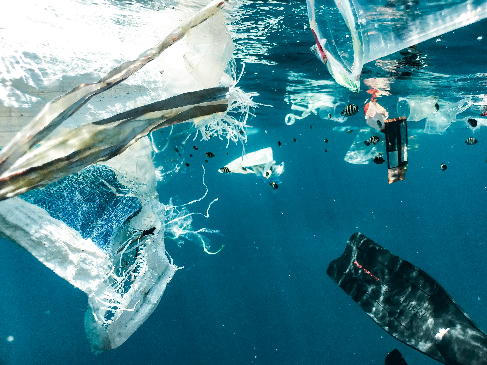
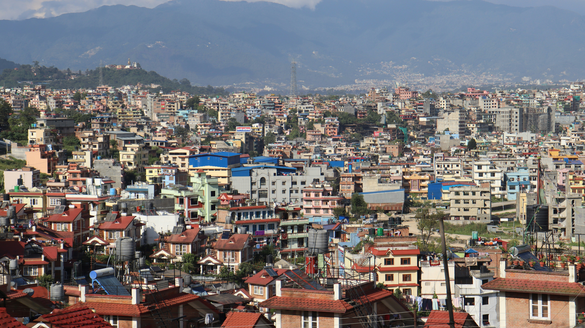

Introduction
Many human activities have affected the current environment we live in. In this content page, we are going to explore these activities. Even though there are numerous types of human activities that cause environmental issues, we will be focusing on some of the main activities out of those.
Deforestation

Deforestation is the clearing of forests; cutting trees intentionally by humans for their own purposes such as agriculture, firewood, manufacturing items, fossil fuel etc. This has been continued for years and now it has been a major environmental disaster in the current world. According to the statistics, in 2010, Sri Lanka had around 3..50 Mha of green forests, which is over 54% of Sri Lanka's land area. but when it comes to 2022, we have lost 8.22kha of green forests, which will afftect CO2 emmisions as well. Many endangered species like Sri lankan Leopard, are at high risk due to losing of their habitats due to deforestion. Since this diturbs the environmental balance as well, it will lead the animals such as elephants who were in forests to come to human habitats. After steeling their homes by deforestation, we can't complain that those innocent animals are invading our habitats because humans already did it do those animals. And since this deforestation affects the water cycle as well, there will be lesser rainfalls and the oxygen percentage in the atmosphere will also be affected.
Pollution
The basic definition of pollution can be taken as the introduction of harmful materials to the environment. Pollution can take place in various forms, it can be land pollution, water pollution, air pollution or noise pollution. All this forms are mainly due to human activities. Because of these irresponsible human activities, not only the environment, but humans are also suffering. Recently in Sri lanka the Air quality of urban areas has been noticed as very poor and toxic. According to the WHO, the air quality average of sri lanka is 3 times higher than the annual air quality guidline. Even though we are still not the worst, we are going up the chart of worst air quality countries, currently sitting at 49th postition. One of the main activities people do that mainly affects land pollution and water pollution is the disposing of garbage; waste matter in an irresponsible manner. Some dispose their waste matter into water bodies leading to water pollution in those areas. These will affect the aqauatic eco system too. In Sri Lanka there is an Environmental Pollution Control Unit that has been established by the government, but still the pollution is increasing day by day. In roads of sri lanka people more often tends to use their vehicle horns unnecessaraly, this will lead to noise pollution mainly in urban areas like Colombo. Due to the pollution, various diseases has stared to spread too. Due to consumption of poluted water people are having kidney related diseases, and due to inhaling of polluted air, the lung diseases rate has gone high.
Since all these are due to the irresponsible actions done by human, we should be more responsible when we are doing our day to day activites. Otherwise there will be no trees; no clean air; no clear water bodies for the future generations.

Overconsumption of natural resources
According to the International Resource panal, the global resource consumption has been tripled since 1970. Overconsumption of resources can be diefined as the use of natural resource, that cannot sustain themselves at the rate of humans consuming those resources. So due to this excessive resouce extraction, biodiversity will be lost and the natural ecosystems will be unbalanced. Deforestaion can also be taken as a result of overconsumption; over use of wood for human purposes. For this non-renewable resources to exsist, we need to give them time to regrow. Well not only trees, the current fish population is also at risk due to overfishing. Internationally, 34% of fish populations are being overfished. If this continues, this will result in the total fish polulation of a some type of fish. The two most used natural resources are water and sand. Even though sand doesn't seem like one of the most used ones, it is heavily used in construction industry for mixing concrete. Each year, around 50 million tons of sand is being extracted. This will lead to consequeces such as deterioration of water bodies since sand is removed in large quantities. In Sri lanka too we heard cuuting of trees near Sinheraja forests which is a result of overcutting of trees for human purposes.
Urbanization
Urbanization can be simply defined as the transformation of unoccupied and unpopulated areas into highly populated areas. Due to the increase of human population, people will have to make buildings and other constructions to make their habitat more comfortable. But for this process most the time, large areas of forests are cleared resulting deforestation. And this will leaad to the loss of habitats for lots of other animals as well. Eventualling leading to conflicts betweet humans and those animals, in Sri lanka, the Wild Elephant-Human conflict can be taken as an example for this situation. And due to urbanization the pollution of air is also increased in that area since there will be industrial waste, burning of fossil fuels and other emmisions. And since the habitat is created by humans and is being highly populated, the risk of spreadind diseases is really high. And since there will be less trees, the temperatures in those areas will also rise which will affect not only the humans but other animals in the environment and the remaining plants; trees as well. In most of the countries the water quality of water bodies has been drastically decreased due to the issues that come up with urbanization. So these problems created by humans has affected the mother nature and future generations of humans as well.
It is our duety to protect this environment we live in, YOU have to start the process first before anyone else, YOU are responsible as well for the conservation of the environment.
Visit our Conservation of the environment page to get more knowledge on protecting the environment.